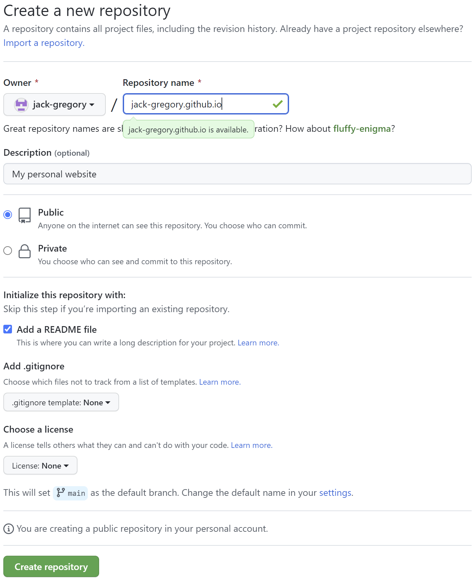
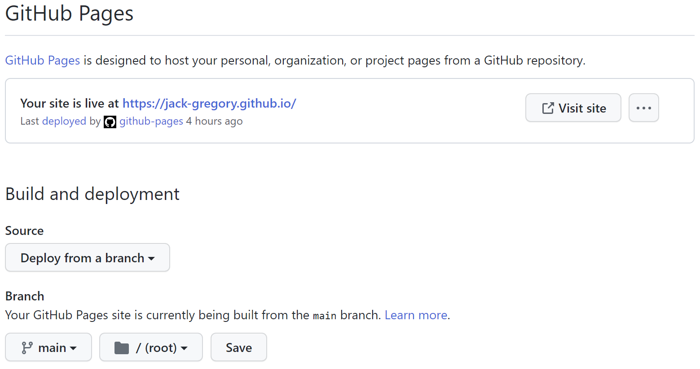
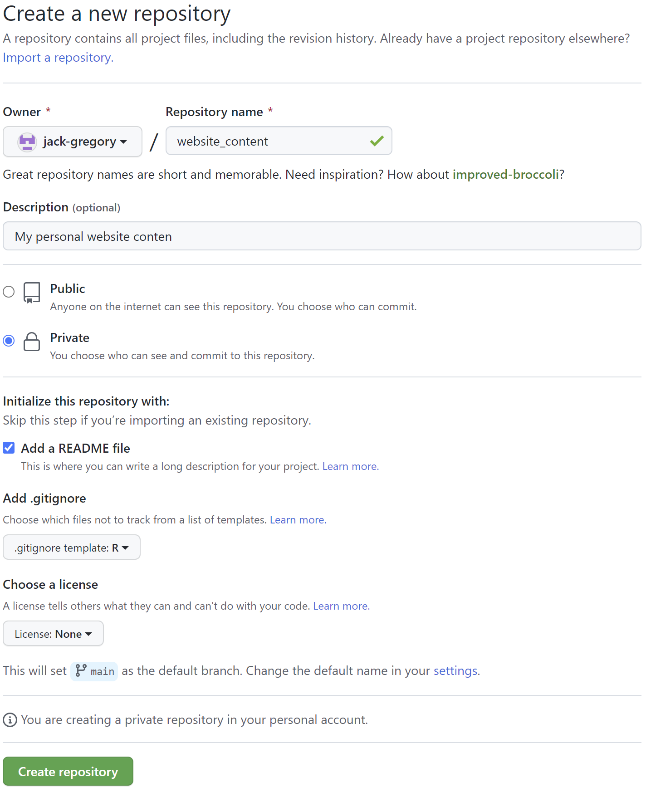

How to restrict access to a hugo-apéro website on GitHub Pages ...
... using git submodules
By Jack Gregory in R GitHub Hugo
September 1, 2022
TL;DR
In this blog, I summarize the steps necessary to adapt the deployment of a Hugo-Apéro website to GitHub Pages while keeping either the content or the full website code private.
Introduction
This is a followup to my companion blog post titled: How to setup hugo-apéro on GitHub Pages. If you’re looking for details on how to setup your Hugo-Apéro website from scratch, I would recommend starting there.
In the previous post, the setup resulted in a public GitHub repository for your website. Here, I outline a number of potential alterations using git submodules to keep either the full website or just the content private. This prevents the desired materials from being easily copied and transposed elsewhere on the web.
Please note that this blog primarily highlights where it diverges from the companion post. It provides links back to the companion post whenever the steps are identical. Also, much of what follows is based on the blog “ How to Utilize Submodules within Git Repos” by Paige Niedringhaus. The documentation on git submodules is also a useful resource.
Private website repository
In this setup, we keep the “website” repository public, while the website source code must be stored in a public repository such that it can be hosted by GitHub Pages.
Create GitHub repository
Here, the first step is to create a private repository on GitHub. The repository name is inconsequential, so we’ll adopt something bland but descriptive: website_build.
Create a new repository on GitHub from https://github.com/new:
-
Name your repository as desired, though be sure to avoid any special GitHub repository names.
-
Make the repository “private”.
-
Check to initialize with a
README.mdfile. -
Don’t add a
.gitignorefile asblogdownwill handle this later.

Create site
See Create site from the companion post.
Add submodules
See
Add hugo-apero submodule from the companion post. Use the instructions therein to add a hugo-apero submodule as well as to assist with the remainder of this subsection.
GitHub Pages hosting is only available in public repositories with a GitHub Free account. So, since our website_build repository is private, we won’t be able to publish on the web. We could solve this by upgrading to a GitHub Pro account, which allows both public and private repositories to use GitHub Pages, or we could convert our website source folder into a public submodule.
To avoid upgrading, we’ll adopt the second option and create a public submodule to contain the source code for our website.
Create a new repository on GitHub from https://github.com/new:
-
Name the repo
[username].github.iounder your account and replace “[username]” with your actual GitHub handle excluding brackets. -
Make the repository “public”.
-
Check to initialize with a
README.mdfile. -
Don’t add a
.gitignorefile.

We now need to add the created repository into website_build as a submodule. We do so by replacing the /public/ folder.
Create a public submodule
-
Delete the
/public/folder in thewebsite_buildrepo. -
Open Git Bash and navigate to the
website_buildrepo. -
Enter the following line of code in the terminal and replace “[username]” with your actual GitHub handle excluding brackets:
$ git submodule add https://github.com/[username]/[username].github.io.git public
Publish to GitHub Pages
Now that we have our website setup locally, we can proceed to publishing it through GitHub Pages.
Add .nojekyll
To ensure GitHub does not rebuild our website using Jekyll, we need to create a (hidden) file named .nojekyll in the /public/ folder.1 Assuming we are in our website_build R project, this can be done by running the following line of code in the R console:
> file.create("public/.nojekyll")
Build the website
Build the website locally using Hugo by running the following line of code in the R console:
> blogdown::build_site()
This should populate the /public/ folder with the static website.
Push changes to GitHub
Note that, although, /public/ is a subdirectory in the website_build repository, Git sees it as a submodule and does not track its contents. Instead, Git sees it as a particular commit from that repository. Given this and since we’ve made changes to both the /public/ submodule (i.e., the [username].github.io repository) and the website_build repository, we must push the changes from both sequentially. First, we update the [username].github.io remote with the latest changes. We navigate to the website_build repository in Git Bash and run the following commands:
$ cd public
$ git add .
$ git commit -m "Publish initial website"
$ git push origin HEAD
Next, we update the website_build remote by returning to the root directory and running the following commands:
$ cd ..
$ git add .
$ git commit -m "Publish initial website"
$ git push origin HEAD:main
Now, we have updated both remote repositories.
Edit GitHub Pages settings
Finally, we need to adjust a few of the [username].github.io repository settings to ensure the website is properly published to GitHub pages.
Adjust some repository settings:
-
Navigate to Settings
\(\rightarrow\)Pages. -
Under “Build and deployment”:
-
Change “Source”
\(\longrightarrow\)“Deploy from branch”; -
Change “Branch: Branch”
\(\longrightarrow\)“main”; and, -
Change “Branch: Select folder”
\(\longrightarrow\)“/(root)”.
-
-
Click save.

The website should now be published online at the following link: “https://[username].github.io/”, where “[username]” will be replaced with your GitHub handle.
Private content folder
Alternatively, we could keep website_build public, but store all content in a private repository, e.g., website_content. This involves a similar process to that for the
private website repository above, except for two main differences:
- Setup
website_buildas a public repository; and, - Create
website_contentas a private repository and add it as a submodule replacing the/content/folder.
Step 1 is identical to Create GitHub repository above, except now the repository should be public.
Step 2, on the other hand, is a little more involved. Similar to
Add submodules above, we wish to add the [username].github.io as a submodule under the /public/ folder. We also want to repeat the steps to add website_content as a submodule under the /content/ folder. This setup means that while our “website” repository will be public, we can nevertheless keep its content private.
Create a new repository on GitHub from https://github.com/new:
-
Choose a name for your “website content” repository. I chose something banal like
website_content. -
Make the repository “private”.
-
Check to initialize with a
README.mdfile. -
Add a
.gitignorefile based on the R template.

We can now repeat the steps outlined in
Add submodules above. Essentially, we wish to add our private website_content repository as the /content/ folder in our public website_build repository. We can do so by following the steps outlined below:
Create a content submodule
-
Store the contents of the
/content/folder in another location. -
Delete the original
/content/folder in thewebsite_buildrepo. -
Open Git Bash and navigate to the
website_buildrepo. -
Enter the following line of code in the terminal:
$ git submodule add https://github.com/jack-gregory/website_content.git content
- Add the stored contents to the new submodule.
This will clone the website_content repository in a /content/ folder. So, although our remote repository is named website_content on GitHub, it will be referenced as a folder named “content” in order to comply with the default Hugo folder structure.
Workflow summary
My workflow for these versions of the setup is very similar to that outlined in the companion post here. However, Step 7 from the companion post should be replaced with the two steps outlined below.
-
Add and commit all changes to the
/content/and/or/public/submodules using a new local branch linked to the main remote branch. From Git Bash and within each submodule repository, use the following code:2$ git checkout -b build $ git branch --set-upstream-to origin/main $ git add . $ git commit -m "Content updates" $ git push origin HEAD:main -
Add, commit and push changes to the
website_buildremote repository, including all commits from the/content/and/or/public/submodules. From Git Bash and within thewebsite_buildrepository, use the following code:2$ git add . $ git commit -m "Content updates" $ git pull $ git push --recurse-submodules=check
So, there we go. We can now have our Hugo-Apéro website published to GitHub pages while maintaining part or all of the code privately!
-
Further details and explanation can be found in the git submodules documentation. ↩︎ ↩︎